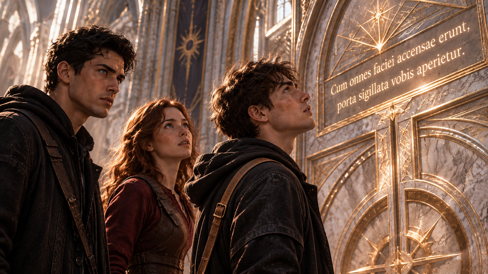
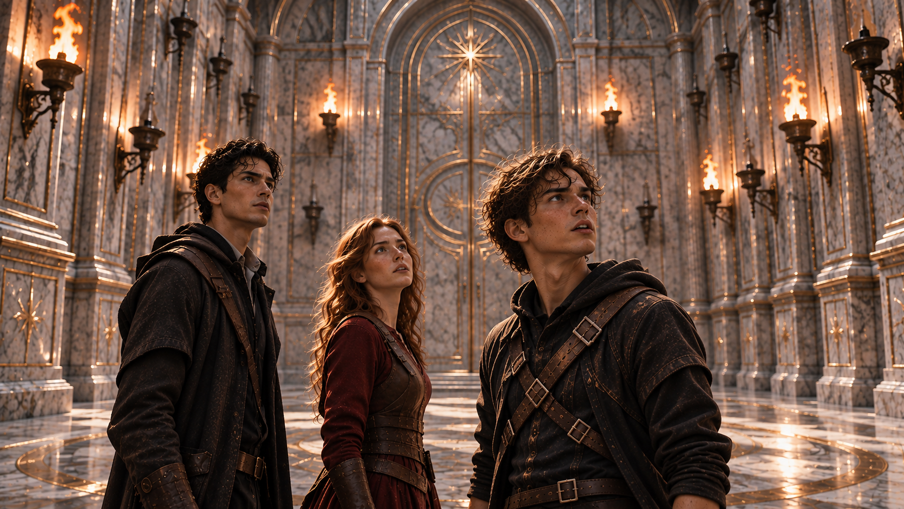
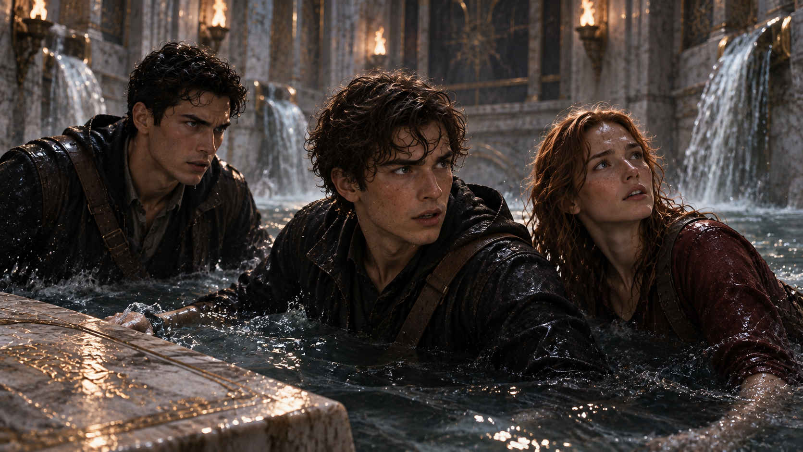

WHITE MAGIC ART STUDIO
第十五章
火炬之房
寇德薩拉（Cordesala）內部
當意識逐漸恢復清晰，安德烈家的三兄妹發現自己已置身於一座陌生的石室。
那是一個寬闊得令人難以估量的空間。高聳的拱形穹頂向上延伸，潔白的大理石牆面刻滿古老符文，微弱的光芒沿著雕刻的紋路流動，映照在白金與青玉交錯鋪成的地面上。
這裡似乎已經存在了千百年，卻找不到半點歲月侵蝕的痕跡。石磚光潔如新，牆角沒有灰塵，甚至感覺不到一絲空氣流動。整座石室安靜得出奇，彷彿連時間都被隔絕在外。
克里斯緩緩環顧四周，久久沒有說話。
「哇……這地方竟然真的存在。」
「比傳說中還壯觀呢。」安娜仰望著穹頂，忍不住讚嘆。
柴克則盯著那些發光的符文看了好一會兒。
「所以這裡就是……寇德……德……」
「薩拉！」安娜立刻接上他的話，「虧你剛才還記得！」
柴克不服氣地看了她一眼。
「這名字本來就很難唸好不好。」
克里斯轉向弟弟，神情認真了幾分。
「這裡據說收藏著自神創世以來，曾經出現在世上的各種神聖之物。光是能夠進來，就已經是非常難得的事了。」
「所以？」
「所以，基於最基本的尊重，你最好把名字記熟，柴克。」
柴克撇了撇嘴。
「好啦，寇德薩拉。我記住了。」
安娜輕笑一聲，隨即將目光投向石室前方唯一的出口。
「那我們接下來往哪裡走？」
克里斯取出傑西交給他的手稿，仔細翻閱了片刻。
「根據傑西的翻譯，我們必須依序通過三道試煉。第一道叫做『火炬之房』。」
他抬頭望向前方的通道。
「沿著這裡直走，應該就能抵達。」
三人沒有再耽擱，離開石室，踏入一條筆直而寬敞的長廊。
廊道兩側排列著高大的石柱，每一根都雕刻著不同的圖案。有翻騰的雷電、燃燒的烈焰，也有遼闊的星辰。石柱上方，細密的金線交織成一片星圖，在穹頂微光的映照下，隨著三人的腳步變換著光澤。
途中，他們經過一間形似祭壇的石室。
一塊透明晶石靜靜懸浮在房間中央，沒有任何支撐。晶石內部封存著一簇白色光焰，正緩緩旋轉，偶爾向外迸出細小的光點。
柴克忍不住停下腳步，因為眼前的事物讓他想起最近常作的夢，
「那又是什麼？」
克里斯看了一眼手中的譯稿。
「不知道。不過，應該不是我們要找的東西。」
「連你也不知道？」
「我又不是寇德薩拉的管理員。」
安娜朝晶石望了一眼，隨即收回視線。
「先通過試煉比較重要。其他的等之後再說吧。」
柴克雖然仍有些好奇，最後還是跟上了哥哥與妹妹的腳步。
三人沿著長廊繼續前進。
走了一段路後，柴克忽然開口。
「那個……我想問你們一件事。」
「什麼？」克里斯問。
柴克猶豫片刻。
「你們到底對『雷翼』了解多少？」
克里斯稍微想了想。
「根據傳說，每一代雷翼的降臨，都會為繼承雷之力的聖術師帶來救贖與曙光，尤其是在世界陷入黑暗的時候。」
柴克點了點頭，卻沒有立刻接話。
幾步之後，他再次開口。
「那……傳說有沒有提過，雷翼可以直接跟拉比說話？」
克里斯轉頭看向他。
「這倒是沒聽說過。」
安娜也露出疑惑的神情。
「怎麼了，Z？你見過祂？」
「我不太確定。」
柴克皺起眉頭，似乎正在思索該怎麼解釋。
「我之前跟克里斯提過，最近幾個月，我常常會做一些很奇怪的夢。」
他望向長廊深處。
「夢裡總有一個人。一開始，我根本看不清楚他的樣子，可是最近幾次，他的身影越來越清楚了。」
「什麼樣的人？」安娜問。
「穿著一件白袍……」
柴克努力回想。
「臉上好像還戴著一張金色的半面具。」
安娜忽然停下腳步。
「等一下。」
她轉向柴克，表情變得認真。
「你上次在訓練室裡，打到一半突然失去意識，就是因為進入那個夢境？」
柴克點頭。
「對。」
克里斯沉吟片刻。
「如果是這樣，倒也不是完全不可能。」
「什麼意思？」
「你之所以被稱為雷翼，是因為體內繼承了拉比留下的雷之翼。」克里斯解釋道，「如果那份力量能讓你和祂產生某種精神上的連結，或許也說得通。」
柴克低頭看著自己的手。
「可是我根本不知道要怎麼進去。」
他無奈地嘆了口氣。
「每次都是突然發生，有時候連我自己都不知道發生了什麼事。」
「所以你想控制那個夢？」安娜問。
「嗯。」
柴克抬起頭。
「如果我能自己決定什麼時候進去，說不定就可以直接問祂，現在紐約的魔神危機到底該怎麼解決。」
他停頓了一下。
「還有……」
「還有什麼？」
「我的聖術！」
柴克攤開雙手。
「若那個人真的是拉比，說不定祂能——」
「等等。」
克里斯突然舉起手。
柴克話說到一半，只好停下。
「又怎樣？」
克里斯沒有回答，只是望向前方。
長廊盡頭，一扇巨大的白色石門靜靜矗立著。
石門高逾三公尺，表面鑲嵌著細緻的金色紋路。門楣上方刻著一行古老文字，筆畫深深嵌入石面，卻看不出任何磨損。
與他們一路見到的其他建築相同，這扇門沒有灰塵，也沒有歲月留下的裂痕。
彷彿從建造完成的那一天起，它就始終在此等待著。
三人走到門前。
克里斯仰頭望著門楣上的銘文，試圖辨認那些古老的字母。
「這是……古拉丁文嗎？」
他皺起眉頭。
「如果傑西在這裡就好了，他肯定看得懂——」
「『當所有的火炬皆被點燃……』」
一道聲音忽然從旁邊傳來。
克里斯停住。
柴克正仰著頭，望著石門上的文字。

「『封印之門……將為爾等開啟。』」
安娜猛然轉向他。
「柴克？！」
柴克回過頭。
「幹嘛？」
「你看得懂上面的字？」
柴克愣了一下。
「看得懂啊。」
他看看安娜，又看看克里斯。
「你們看不懂嗎？」
兩人一時都沒有回答。
克里斯再次望向門楣上的古文，隨後像是明白了什麼。
「原來如此……」
「什麼原來如此？」
「看來這就是為什麼，三道試煉一定要有一位真正的翼聖術師參與。」
克里斯看向柴克。
「你或許就是開啟這些試煉的關鍵。」
柴克正想追問，身後卻突然傳來一陣低沉的震動。
喀——
三人同時回頭。
原本通暢的石廊上方，一道厚重的石牆正緩緩降下。
「等一下，那是什麼？」
柴克話音未落，石牆便猛然落地。
轟隆！
沉重的撞擊聲在空間裡迴盪。
來時的通道徹底被封住。
柴克立刻轉身，這才發現他們所在的區域已經成為一間封閉的方形石室。

克里斯迅速環顧四周。
四面潔白的石壁高處，整齊排列著十盞漆黑的金屬火炬。其中三盞正燃燒著橘紅色的火焰，另外七盞則毫無光亮。
房間中央矗立著一座圓形石台，台上另有一把比牆上火炬更加高大的金屬主火炬。
它的火盆中沒有半點火光。
克里斯看向前方石門上的銘文，又看了看中央的主火炬。
「火炬……」
就在這時，整座石室微微震動起來。牆角傳來沉重的機械運轉聲，彷彿某種沉睡已久的古老機關，正隨著他們的到來緩緩甦醒。
「看來，我們已經正式踏入第一道試煉了。」
克里斯抬起頭。
「火炬之房。」
安娜警覺地掃視四周，目光停留在那些尚未點燃的火炬上。
「總之……只要把剩下的火炬全部點起來，就能開門了吧？」
「照銘文來看，應該是這樣。」克里斯回答。
「那就簡單了。」
安娜走向中央石台，伸出右手。
「艾連。」
嗡——
她的聲音在石室裡輕輕迴盪。
然而，什麼都沒有發生。
安娜的表情僵住。
她低頭看了看自己的手。
「艾連。」
依然沒有任何反應。
「怎麼回事？」柴克皺眉。
安娜重新集中精神。
「艾連！」
這一次，她喊得更加用力。
空氣卻安靜得有些尷尬。
柴克看看她，又看看她空空的手。
「呃……看來術器使也有所謂失靈的時候？」
「閉嘴，Z。」
安娜沒好氣地瞪了他一眼，神情卻逐漸變得凝重。
克里斯似乎意識到了什麼。
他抬起手，試圖喚出熟悉的綠色數據。
「嗯……有意思。」
沒有綠光。
沒有數據。
就連最微弱的雷元素反應，也沒有出現。
克里斯慢慢放下手。
「看來，這裡禁止我們使用聖術。」
柴克一愣。
「什麼？」
「這個空間似乎存在某種限制。」克里斯環顧四周，「我們的力量全部被封住了。」
安娜握緊手掌。
「所以，試煉要我們點火……」
「卻又不准我們用聖術？」柴克接著說。
他望向中央那把漆黑的火炬。
「這地方開始讓我討厭了。」
克里斯沒有理會弟弟的抱怨，立刻開始檢查石室。
三人分頭搜尋，仔細查看牆面、石柱、地板，以及火炬周圍的石造結構，試圖找出能夠啟動機關的線索。
然而，除了牆上已經燃燒的三盞火炬之外，房間裡沒有任何能夠取得的火源，也找不到可以操作的機關。
中央石台上的主火炬更像是與石座連成一體，無論怎麼推動，都紋絲不動。
「一定有東西被我們忽略了。」
克里斯再次回到石門前，手指沿著門縫摸索。
「既然是試煉，就一定有解法。」
柴克靠著中央石台，雙手抱胸。
「也可能解法就是讓我們餓死。」
「你是認真的嗎？」安娜說。
「不然你有更好的想法？」
安娜正要回答——
喀。
一聲細微的聲響，突然從石室角落傳來。
三人同時停下動作。
「你們有聽到嗎？」柴克問。
喀。
又是一聲。
這一次，聲音來自安娜身旁的牆面。
她小心翼翼地走近。
下一秒——
嘩！
一道水柱猛然從牆縫噴出！
「安娜！」
克里斯立刻衝上前，一把將她拉開。
還沒等三人反應，另一側的牆面也傳來刺耳的碎裂聲。
緊接著，更多水流從石壁間洶湧而出。
「這什麼鬼？！」
柴克連忙跳上中央石台。
不過短短數秒，冰冷的水便漫過三人的腳踝。
「找出口！」克里斯立刻喊道。
安娜衝向前方的白色石門，試圖尋找開啟的方法；克里斯則重新檢查周圍的牆面。
柴克忽然想起來時的通道。
「原路！」
他轉身衝向後方，來到剛才石牆落下的位置，伸手用力推了推。
厚重的石牆紋絲不動。
柴克不甘心，又試著沿著牆面尋找縫隙，卻什麼也沒找到。
「可惡，這邊也被封死了！」
水仍不斷湧入。
腳踝、小腿、膝蓋。
短短片刻，水位便已上升至三人的腰際。
「克里斯！」安娜喊道。
「我知道！」
克里斯快速環視四周，額前已經滲出汗水。
「一定有機關。」
「我們不是已經找過了嗎？」柴克問。
「那就再找一次！」
克里斯的聲音比平常急促許多。
柴克怔了一下。
他很少看見哥哥這個樣子。
平常的克里斯，無論面對多麼棘手的情況，總能冷靜地分析局勢，彷彿永遠比其他人多想了好幾步。
可是現在，他沒有《雷之演算法》，沒有那些熟悉的數據，也沒有任何能夠幫助他掌控局勢的力量。
只有不斷上升的水。
「這裡！」
安娜突然喊道。
她原本正扶著中央石台，試圖穩住身體，手掌卻意外碰到火炬底座下方一塊略微突起的石板。
喀。
石板竟然向內陷了下去。
緊接著，底座側面一塊原本與石台融為一體的石片緩緩滑開，露出一行細小的古老文字。
「這裡還有東西！」
克里斯立刻靠近。
「柴克，快過來！」
柴克趟著水游向石台，俯身辨認那些剛剛顯露的文字。
奇怪的是，明明從未學過這種語言，他卻能自然而然地理解每一個字的意思。
只是這一次，文字所傳達的訊息，讓他遲遲沒有開口。
「Z？」安娜催促。
柴克皺緊眉頭，終於緩緩唸出：
「『等待到底者——』」
他停頓了一下。
「『將看見出路。』」
石室裡只剩下水流不斷灌入的聲響。
克里斯望著他。
「……什麼？」
「就寫這樣。」
「什麼叫等待到底？」
「我不知道。」
安娜也愣了一下。
克里斯閉上眼睛，深吸一口氣。
「先別管那句話了，我們繼續找。」
然而，水位已經來到胸口。
三人不得不浮起身體，才能勉強維持呼吸。

「也許要等水位到達某個高度。」安娜提出猜測，「說不定會觸發機關。」
克里斯立刻望向牆面。
「有可能。」
他游向其中一根石柱，試圖尋找任何與水位有關的刻痕。
柴克則漂浮在中央石台旁，望著那把始終沒有點燃的主火炬。
水。
火。
這兩樣東西，怎麼看都不應該出現在同一場試煉裡。
「會不會是要阻止水進來？」柴克忽然問。
「怎麼阻止？」安娜回頭。
「把那些洞堵住？」
三人望向牆面。
數十道水流正從四面八方不斷湧入，根本無從下手。
柴克沉默片刻。
「……當我沒說。」
水位繼續上升。
肩膀。
脖子。
三人已經必須仰著頭，才能讓口鼻露出水面。
而在此時，水面逐漸逼近牆上那三盞原本燃燒著的火炬。
第一盞火炬被水吞沒。
嗤——
橘紅色的火焰瞬間熄滅。
緊接著，是第二盞。
第三盞。
隨著最後一點火光消失，石室陷入昏暗，只剩下石門與牆面符文散發的微弱光芒，勉強映出三人的輪廓。
「克里斯！」
安娜的聲音開始發顫。
「我找不到！」
「一定還有東西！」
克里斯游向另一側，伸手摸索石壁。
「一定有！」
柴克看著哥哥焦急的背影，又回頭望向中央石台。
等待到底者，將看見出路。
等待。
從進入這間石室開始，他們一直在尋找答案。
找機關。
找出口。
找火源。
試著阻止水流。
他們幾乎嘗試了所有能想到的方法。
唯獨沒有做過一件事。
等待。
「克里斯。」
哥哥回過頭。
「什麼？」
柴克指向石台。
「如果那句話說的是真的呢？」
克里斯皺眉。
「什麼意思？」
「等待。」
柴克嚥了口口水。
「如果……我們根本不用做任何事呢？」
安娜也停下了動作。
克里斯的神情卻沉了下來。
「柴克，水已經快淹滿了。」
「我知道。」
「如果你猜錯——」
「我知道！」
柴克突然提高音量，連自己都嚇了一跳。
他望向那行古老的文字，心跳快得幾乎讓胸口發痛。
「可是我們已經試過所有辦法了！」
他指著四周。
「沒有出口，沒有機關，聖術也不能用！」
柴克深吸了一口氣。
「如果這個地方真的想殺我們，根本不需要留下那句話。」
克里斯沒有回答。
水仍然不斷上升。
穹頂下方所剩的空氣，已經不足半個人的高度。
安娜抬頭望著越來越接近的天花板。
「所以……」
她低聲問道：
「我們就什麼都不做？」
柴克看著她。
「我不知道。」
這一次，連他自己也無法確定。
三人陷入沉默。
柴克討厭這種感覺。
他想要一個答案，一個能證明自己沒有猜錯的證據。
可是什麼都沒有。
只有那句話。
等待到底者，將看見出路。
「好吧，我覺得柴克說的有道理。」
安娜突然開口。
柴克轉過頭。
「什麼？」
安娜看著他。雖然臉色有些蒼白，卻仍勉強露出笑容。
「反正我也想不到更好的辦法了。」
「這聽起來完全不像信任。」
「你要求很多欸。」
柴克忍不住笑了一下。
兩人一起望向克里斯。
克里斯仍然盯著牆面，彷彿只要再多看一眼，就能從那些冰冷的石頭裡找出答案。
水已經碰到他的下巴。
最後，他緩緩閉上眼睛，吐出一口氣。
「好。」
柴克愣住。
克里斯游回弟弟妹妹身旁。
「等。」
「你確定？」
「不確定。」
克里斯望著柴克。
「但如果這是試煉……」
他停頓片刻。
「那我們一起猜錯。」
柴克怔怔地看著哥哥。
還沒來得及回答，冰冷的水便已漫過三人的嘴唇。
鼻子。
額頭。
最後一點能夠呼吸的空氣，也終於消失。
整座石室，徹底沉入水中。
柴克本能地屏住呼吸。
四周的聲音瞬間變得模糊，只剩下水流在耳邊翻湧，以及自己越來越急促的心跳。
他看見克里斯浮在不遠處，安娜則緊緊抓住他的手。
一秒。
兩秒。
三秒。
什麼都沒有發生。
柴克的胸口開始發緊。
我猜錯了。
這個念頭突然闖進腦海。
他望向哥哥。
克里斯仍在觀察四周，似乎還沒有完全放棄尋找其他方法。
安娜握著他的手微微收緊。
柴克下意識回握。
時間彷彿被拉得無比漫長。
他想往上游，可是上方已經沒有空氣。
想撞開入口，卻知道那裡仍有一道無法突破的石牆。
他們已經沒有其他選擇。
只能等待。
等待到底者……
柴克閉上眼睛。
再一下。
再等一下。
他不知道自己究竟還能堅持多久，也不知道那句古老的銘文是否真的值得相信。
可是安娜還握著他的手。
克里斯也仍然留在他們身旁。
他們誰也沒有離開。
就在這時——
昏暗的水中，忽然出現了一點光。
柴克猛然睜開眼睛。
石室中央，那把早已完全沉入水中的主火炬，竟然亮了。
起初，只是一小簇微弱的火苗。
它在水中輕輕搖曳，彷彿隨時都會熄滅。
然而下一秒，那簇火焰非但沒有消失，反而逐漸變得明亮。
金色的光芒穿透水流，照亮了中央石台。
柴克怔住。
那不是雷電。
也不是他們任何一個人施展的聖術。
而是一簇真正燃燒著的——
火。
安娜睜大眼睛。
克里斯也停下了所有動作。
下一瞬間——
轟！
中央主火炬猛然燃起熊熊金焰！
火焰在水中筆直升騰，金色的光芒沿著石台表面的古老紋路迅速蔓延，向四面石壁擴散。
一道。
兩道。
無數金色線條攀上牆面，連結那十盞早已熄滅或尚未點燃的火炬。
緊接著，牆上的火炬開始依序燃起。
一盞。
兩盞。
三盞……
那些原本就不曾燃燒的火炬，接連綻放出金色光芒；就連先前被水熄滅的三盞，也重新燃起熊熊火焰。
直到第十盞火炬終於點亮。
連同中央的主火炬，整整十一把火炬，全都在水中燃燒。
整座石室，頓時被耀眼的金光籠罩。
前方巨大的白色石門，終於有了反應。
門上的古老銘文逐一亮起，沉重的機關聲自石壁深處傳來。
轟隆——！
石門緩緩向兩側開啟。
下一秒，強大的水流猛然朝出口傾瀉而去！
三人根本來不及反應，便被洶湧的水勢一同捲向前方。
柴克只覺得身體突然失去控制，眼前的金光與水流混成一片。
隨後——
砰！
他重重摔在另一側的石地上。
大量清水從身旁奔流而過，隨即沿著地面的縫隙迅速退去。
「咳！咳咳——！」
柴克趴在地上，劇烈地咳嗽著。
「柴克！」
安娜連忙爬到他身旁。
克里斯也撐著地面，大口喘氣，濕透的頭髮凌亂地貼在額前。
過了好一會兒，三人才終於恢復正常呼吸。
柴克翻過身，直接躺在冰冷的石地上。
他望著上方陌生的天花板，久久沒有說話。
最後，才從喉嚨裡擠出一句：
「……我討厭這裡。」
安娜也躺在他身旁。
「這才第一個試煉。」
柴克立刻轉頭。
「妳一定要現在提醒我嗎？」
安娜忍不住笑了。
克里斯則坐在另一側，濕透的衣服緊貼著身體，模樣狼狽得完全不像平常的他。
柴克望向哥哥。
「所以。」
「嗯？」
「剛才到底是什麼原理？」
克里斯沉默了。
柴克耐心等著。
片刻之後，克里斯終於開口。
「不知道。」
柴克愣了一下，隨即笑出聲。
「你今天真的很常說這句。」
克里斯沒好氣地瞪了他一眼。
「你要是知道，倒是可以解釋給我聽。」
「我也不知道啊。」
「那就閉嘴休息。」
柴克笑著重新躺回地上。
然而，當他望向身後時，笑意又慢慢收斂了。
那扇白色石門已經重新關上。
水。
火炬。
還有那簇不可能在水中燃燒的金色火焰。
全都消失在門後。
「等待到底者……」
柴克輕聲唸道。
「將看見出路。」
安娜轉頭看向他。
「看來是真的。」
柴克沒有回答。
他其實仍然不知道，如果那把火炬最後沒有燃起，自己究竟還能等待多久。
也不知道剛才那場試煉，究竟是要他們明白什麼。
他只記得，當所有方法都失去作用，當連克里斯也找不到答案時，他們最後選擇了相信那句無法證實的話。
而最重要的是——
他並不是獨自等待。
安娜握住了他的手。
克里斯留在了他們身旁。
三個人一起等到了最後。
柴克慢慢坐起身。
前方，又是一條看不見盡頭的古老通道。
三人的身影逐漸消失在通道深處。
而在他們身後，那扇沉重的白色石門，依然靜靜矗立著。
彷彿什麼都不曾發生。